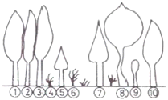
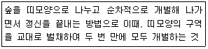
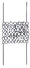
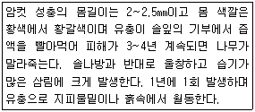
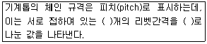

산림기능사 (2013-01-27 기출문제)
1과목: 조림 및 육림기술
1. 은행나무, 잣나무, 벚나무, 느티나무, 단풍나무 등의 발아 촉진법으로 가장 적당한 것은?
- 종자 정선이 끝나는 바로 노천매장을 한다.
- 씨뿌리기 한 달 전에 노천매장을 한다.
- 보호저장을 한다.
- 습적법으로 한다.
(정답률: 85%)

2. 숲 가꾸기에서 가지치기를 하는 가장 큰 목적은?
- 중간수입을 얻는다.
- 연료(땔감)를 수확한다.
- 마디가 없는 우량목재를 생산한다.
- 생장을 촉진한다.
(정답률: 81%)
3. 비교적 짧은 기간 동안에 몇 차례로 나누어 베어내고 마지막에 모든 나무를 벌채하여 숲을 조성하는 방식으로, 갱신된 숲은 동령림으로 취급되는 작업 방식은?
- 산벌작업
- 모수작업
- 택벌작업
- 왜림작업
(정답률: 73%)
4. 갱신하고자 하는 임지 위에 있는 임목을 일시에 벌채하고 새로운 임분을 조성시키는 방법은?
- 개벌작업
- 모수작업
- 택벌작업
- 산벌작업
(정답률: 90%)
5. 우량묘목 생산기준에서 T/R율은 무엇인가?
- 묘목의 무게이다.
- 묘목의 지상부 무게를 뿌리부의 무게로 나눈 값이다.
- 묘목의 뿌리부 무게를 지상부의 무게로 나눈 값이다.
- 묘목의 지상부의 무게에서 뿌리부의 무게를 뺀 값이다.
(정답률: 80%)
6. 다음에서 제벌작업 시 제거되어야 할 나무로만 옳게 나열한 것은?

- ①, ⑤
- ④, ⑤
- ⑦, ⑨
- ②, ⑧
(정답률: 93%)
7. 바다에서 불어오는 바람은 염분이 있어 식물에 해를 준다. 이러한 해풍을 막기 위해 조성하는 숲은?
- 방풍림
- 풍치림
- 사구림
- 보안림
(정답률: 69%)
8. 침엽수의 가지를 제거하는 가장 좋은 방법은?
- 가지밑살의 끝부분에서 자른다.
- 가지가 뻗은 방향에 직각되게 자른다.
- 수간에 오목한 자국이 생기게 자른다.
- 수간에 바짝 붙여 수간축에 평행하도록 자른다.
(정답률: 78%)
9. 묘목의 판갈이 또는 산출 시 단근작업을 하는 가장 큰 이유는?
- 지상부 생장 촉진을 위하여
- 양분 소모를 적게 하기 위하여
- 수분의 소모를 억제하기 위하여
- 가는 뿌리(세근)의 발달을 촉진하기 위하여
(정답률: 90%)
10. 채종림의 조성 목적으로 가장 적합한 것은?
- 방풍림 조성
- 우량종자 생산
- 사방 사업
- 자연보호
(정답률: 93%)
11. 우량묘목의 구비조건으로 적합하지 않은 것은?
- 조직이나 눈 또는 잎이 충실할 것
- 줄기, 가지, 잎이 정상적으로 자랄 것
- 직근이 측근 또는 잔뿌리의 발생보다 양호할 것
- 웃자라지 않을 것
(정답률: 83%)
12. 상층수관을 강하게 벌채하고 3급목을 남겨서 수간과 임상이 직사광선을 받지 않도록 하는 간벌 형식은?
- A종 간벌
- B종 간벌
- C종 간벌
- D종 간벌
(정답률: 57%)
13. 치수 무육(어린나무 가꾸기)작업의 가장 큰 목적은?
- 목재를 생산하여 수익을 얻기 위함이다.
- 숲을 보기 좋게 하기 위함이다.
- 산불 피해를 줄이기 위함이다.
- 불량목을 제거하여 치수의 생육공간을 충분히 제공하기 위함이다.
(정답률: 86%)
14. 다음 중 무배유종자는?
- 밤나무
- 물푸레나무
- 소나무
- 잎갈나무
(정답률: 76%)
15. 다음 설명에 해당하는 벌채 방법은?

- 연속대상개벌작업
- 군상개벌작업
- 대상택벌작업
- 교호대상개벌작업
(정답률: 68%)
16. 왜림작업에 대한 설명으로 틀린 것은?
- 과거 연료재나 신탄재가 필요했던 시절에 주로 사용되었다.
- 벌기가 짧아 적은 자본으로 경영할 수 있다.
- 묘목의 식재부터 걸리는 여러 단계를 모두 거쳐 생장이 왕성할 때 벌채한다.
- 벌채는 생장정지기인 11월 이후부터 이듬해 2월 이전까지 실시한다.
(정답률: 67%)
17. 묘포설계 구획 시에 시설부지, 주·부도 및 보도를 제외한 묘목을 양성하는 포지는 전체면적의 몇%가 적합한가?
- 20~30
- 40~50
- 60~70
- 80~90
(정답률: 80%)
18. 파종조림의 성과에 관계되는 요인으로 가장 거리가 먼 것은?
- 수분
- 서리의 해
- 동물의 해
- 식물의 해
(정답률: 74%)
19. 인공갱신에 대한 천연갱신의 장점이 아닌 것은?
- 생산되는 목재가 균일하며 작업이 단순하다.
- 자연환경의 보존 및 생태계 유지측면에서 유리하다.
- 성숙한 나무로부터 종자가 떨어져서 숲이 조성된다.
- 보안림, 국립공원 또는 풍치를 위한 숲은 주로 천연갱신에 의한다.
(정답률: 89%)
20. 다음 중 묘령의 표시가 맞는 것은?
- 1 - 1묘 : 발아한 후 파종상에서 1년을 지낸 1년생 묘
- 1/1묘 : 파종상에서 6개월, 그 후 판갈이 하여 6개월을 지낸 만 1년생 묘
- 2 - 1 - 1묘 : 파종상에서 2년, 그 후 판갈이 하여 1년씩 두 번 상체된 묘
- 1/2묘 : 뿌리의 나이가 1년, 줄기의 나이가 2년인 삽목묘
(정답률: 80%)
21. 풀베기에서 전면깎기에 대한 설명으로 틀린 것은?
- 조림목만 남겨 놓고 모든 잡초를 깎는다.
- 피압으로 수형이 나빠지기 쉬운 양수에 적용한다.
- 우리나라 북부지방에서 주로 실시하는 방법이다.
- 낙엽송, 소나무, 삼나무, 잣나무 등에 잘 적용된다.
(정답률: 80%)
22. 우량대경재를 생산하기 위한 숲을 대상으로 미래목을 선발하여 우수한 나무의 자람을 촉진하는 간벌 방법은?
- 상층 간벌
- 도태 간벌
- 기계적 간벌
- 택벌식 간벌
(정답률: 59%)
23. 산벌작업에서의 갱신기간으로 옳은 것은?
- 예비벌부터 하종벌까지
- 하종벌부터 후벌까지
- 후벌부터 하종벌까지
- 수광벌부터 종벌까지
(정답률: 66%)
24. 산벌 작업의 가장 올바른 작업 순서는?
- 예비벌 → 하종벌 → 후벌
- 하종벌 → 후벌 → 예비벌
- 후벌 → 예비벌 → 하종벌
- 후벌 → 하종벌 → 수광벌
(정답률: 92%)
25. 조림용 장려 수종은 장기수, 속성수, 유실수 등으로 구분하는데, 그 중 특성에 따라 오랜 기간 자라서 큰 목재를 생산하는 장기수로 적합한 것은?
- 잣나무
- 현사시나무
- 오동나무
- 밤나무
(정답률: 61%)
2과목: 산림보호
26. 한해의 피해를 경감하는 방법으로 옳은 것은?
- 낙엽과 기타 지피물을 제거한다.
- 묘목을 얕게 심는다.
- 평년보다 파종 등 육묘작업을 늦게 한다.
- 관수가 불가능할 때에는 해가림, 흙깔기 등을 한다.
(정답률: 72%)
27. 수병과 중간기주와의 연결이 옳게 된 것은?
- 소나무 혹병 - 참나무
- 잣나무털녹병 - 낙엽송
- 포플러 잎녹병 - 송이풀
- 소나무류 잎녹병 - 등골나물
(정답률: 66%)
28. 산불이 났을 때 수목이 견디는 힘은 수종에 따라 다르다. 다음 중 내화력이 강한 수종만으로 나열한 것은?
- 은행나무, 아왜나무, 녹나무
- 분비나무, 소나무, 가시나무
- 아까시나무, 고로쇠나무, 사철나무
- 가문비나무, 굴거리나무, 참나무
(정답률: 57%)
29. 산림화재에 대한 설명으로 틀린 것은?
- 지표화는 지표에 쌓여 있는 낙엽과 지피물·지상관목층· 갱신치수 등이 불에 타는 화재이다.
- 수관화는 나무의 수관에 불이 붙어서 수관에서 수관으로 번져 타는 불을 말한다.
- 지중화는 낙엽층의 분해가 더딘 고산지대에서 많이 나며, 국토의 약 70%가 산악지역인 우리나라에서 특히 흔하게 나타나며, 피해도 크다.
- 수간화는 나무의 줄기가 타는 불이며, 지표화로부터 연소되는 경우가 많다.
(정답률: 75%)
30. 파이토플라스마(Phytoplasma)에 의한 병이 아닌 것은?
- 벚나무빗자루병
- 뽕나무 오갈병
- 오동나무빗자루병
- 대추나무빗자루병
(정답률: 80%)
31. 주로 잎을 가해하는 식엽성 해충으로 짝지어진 것은?
- 솔나방, 천막벌레나방
- 흰불나방, 소나무좀
- 오리나무잎벌레, 밤나무혹벌
- 잎말이나방, 도토리거위벌레
(정답률: 61%)
32. 다음 중 수목에 가장 많은 병을 발생시키고 있는 병원체는?
- 균류
- 세균
- 파이토플라스마
- 바이러스
(정답률: 76%)
33. 살충제 중 해충의 입을 통해 체내로 들어가 중독 작용을 일으키는 약제는?
- 접촉제
- 훈증제
- 침투성살충제
- 소화중독제
(정답률: 78%)
34. 다음 그림과 같이 작은 나뭇가지에 가락지모양으로 알을 낳는 해충은?

- 집시나방
- 어스렝이나방
- 미국흰불나방
- 천막벌레나방
(정답률: 79%)
35. 다음이 설명하는 해충으로 옳은 것은?

- 소나무좀
- 솔잎깍지벌레
- 솔잎혹파리
- 소나무가루깍지벌레
(정답률: 78%)
36. 산림화재 후에 임목에 가장 큰 피해를 주는 산림 해충은?
- 솔나방
- 소나무좀벌레
- 오리나무잎벌레
- 넓적다리잎벌
(정답률: 70%)
37. 바이러스 감염에 의한 목본식물의 대표적인 병징은?
- 혹
- 모자이크
- 탈락
- 총생
(정답률: 91%)
38. 모잘록병의 방제법이 아닌 것은?
- 묘상이 과습하지 않도록 주의하고, 햇볕이 잘 쬐도록 한다.
- 파종량을 적게 하고 복토가 너무 두껍지 않도록 한다.
- 인산질 비료를 적게 주어 묘목을 튼튼히 한다.
- 병이 심한 묘포지는 돌려짓기를 한다.
(정답률: 80%)
39. 수관화가 발생하기 쉬운 상대습도(관계습도)는?
- 25%이하
- 30~40%
- 50~60%
- 70%
(정답률: 72%)
40. 묘포에서 뿌리나 지·접근부를 주로 가해하는 곤충류는?
- 풍뎅이과
- 유리나방과
- 솜벌레과
- 혹파리과
(정답률: 93%)
3과목: 임업기계일반
41. 체인톱날 연마 시 깊이제한부를 너무 낮게 연마했을 때 나타나는 현상으로 틀린 것은?
- 톱밥이 정상으로 나오며 절단이 잘된다.
- 톱밥이 두꺼우며 톱날에 심한 부하가 걸린다.
- 안내판과 톱니발의 마모가 심해 수명이 단축된다.
- 체인이 절단되면서 사고가 날 수 있다.
(정답률: 72%)
42. 체인톱의 톱니가 잘 세워지지 않은 것을 사용할 때 발생할 수 있는 문제점으로 가장 거리가 먼 것은?
- 절단효율 저하
- 진동발생
- 톱 체인 마모 또는 파손
- 엔진파손
(정답률: 78%)
43. 체인톱날 종류에 따른 각 부의 연마각도로 옳은 것은?
- 반끌형 : 가슴날 80°
- 끌형 : 가슴각 80°
- 반끌형 : 창날각 30°
- 끌형 : 창날각 35°
(정답률: 57%)
44. 체인톱을 항상 양호한 상태로 유지하기 위해서는 작업 전과 작업 후에 반드시 기계를 점검하고 청소를 해야 한다. 체인톱의 청소 항목에 해당되지 않는 것은?
- 기계 외부의 흙, 톱밥 등 제거
- 에어클리너의 청소
- 엔진 내부 및 연료통의 청소
- 톱 체인의 청소와 톱니세우기
(정답률: 80%)
45. 소경재 벌목을 위해 비스듬히 절단할 때는 수구를 만들지 않는 경우 벌목 방향으로 몇 도 정도 경사를 두어 바로 벌채하는가?
- 20°
- 30°
- 40°
- 50°
(정답률: 72%)
46. 산림작업 시 안전사고의 발생원인과 거리가 먼 것은?
- 안일한 생각으로 태만히 작업을 할 때
- 과로하거나 과중한 작업을 수행할 때
- 계획 없이 일을 서둘러 할 때
- 기술능력을 최대한 발휘할 때
(정답률: 89%)
47. 임도가 적고 지형이 급경사지인 지역의 집재작업에 가장 적합한 집재기는?
- 포워더
- 타워야더
- 트랙터
- 펠러번처
(정답률: 76%)
48. 측척의 용도로 옳은 것은?
- 벌도목의 방향전환에 사용되는 도구이다.
- 침엽수의 박피를 위한 도구이다.
- 벌채목을 규격재로 자를 때 표시하는 도구이다.
- 산악지대 벌목지에서 사용되는 도구로서 방향전환 및 끌어내기를 동시에 할 수 있는 도구이다.
(정답률: 84%)
49. 일반적으로 도끼자루 제작에 가장 적합한 수종으로 묶어진 것은?
- 소나무, 호두나무, 느티나무
- 호두나무, 가래나무, 물푸레나무
- 가래나무, 물푸레나무, 전나무
- 물푸레나무, 소나무, 전나무
(정답률: 74%)
50. 톱니를 갈 때 약간 둔하게 갈아야 톱의 수명도 길어지고 작업능률도 높아지는 벌목지는?
- 소나무 벌목지
- 포플러류 벌목지
- 잣나무 벌목지
- 참나무류 벌목지
(정답률: 62%)
51. 무육작업 시 사용되는 임업용 톱의 톱니 관리방법 중 톱니 젖힘은 톱니 뿌리선으로부터 어느 지점을 중심으로 젖혀야 하는가?
- 1/3 지점
- 1/4 지점
- 1/5 지점
- 2/3 지점
(정답률: 71%)
52. 다음 ( )안에 적당한 값을 순서대로 나열한 것은?

- 1, 2
- 3, 2
- 2, 4
- 4, 2
(정답률: 89%)
53. 산림작업을 위한 안전사고 예방 수칙으로 올바른 것은?
- 긴장하고 경직되게 할 것
- 비정규적으로 휴식할 것
- 휴식 직후는 최고로 작업속도를 높일 것
- 몸 전체를 고르게 움직여 작업할 것
(정답률: 89%)
54. 체인톱날 연마용 줄의 선택으로 적합한 것은?
- 줄의 지름이 1/10 상부날 아래로 내려오는 것
- 줄의 지름이 1/10 상부날 위로 올라오는 것
- 줄의 지름이 상부날과 수평인 것
- 줄의 지름이 5/10 정도 상부날 아래로 내려오는 것
(정답률: 70%)
55. 기계톱을 이용한 벌도목 가지치기 시 유의사항으로 옳지 않은 것은?
- 톱은 몸체와 가급적 가까이 밀착시키고 무릎을 약간 구부린다.
- 오른발은 후방손잡이 뒤에 오도록 하고 왼발은 뒤로 빼내어 안내판으로부터 멀리 떨어져있도록 한다.
- 가지는 가급적 안내판의 끝쪽인 안내판코를 이용하여 절단한다.
- 장력을 받고 있는 가지는 조금씩 절단하여 장력을 제거한 후 작업한다.
(정답률: 75%)
56. 체인톱의 배기가스가 검고, 엔진에 힘이 없다. 어떠한 경우에 이러한 결함이 생기는가?
- 기화기 조절이 잘못되었다.
- 연료 내 오일 혼합량이 적다.
- 플러그에서 조기점화가 되기 때문이다.
- 안내판으로 통하는 오일 구멍이 막혔다.
(정답률: 62%)
57. 전문 벌목용 체인톱의 일반적인 본체 수명으로 옳은 것은?
- 500시간 정도
- 1000시간 정도
- 1500시간 정도
- 2000시간 정도
(정답률: 90%)
58. 기계톱날의 구성요소 중 목재의 절삭두께에 영향을 주는 것은?
- 창날각
- 지붕각
- 전동쇠
- 깊이제한부
(정답률: 80%)
59. 예불기에 의한 작업 시 톱날의 위치는 지상으로부터 어느 정도의 높이가 가장 적합한가?
- 1~5㎝
- 5~10㎝
- 10~20㎝
- 20~30㎝
(정답률: 80%)
60. 일반적으로 많이 사용되는 체인톱의 연료에 대한 설명으로 옳은 것은?
- 연료는 휘발유 10ℓ에 엔진오일 0.4ℓ를 혼합하여 사용한다.
- 옥탄가가 높은 휘발유를 사용한다.
- 작업도중 연료 보충은 엔진가동 상태로 혼합한다.
- 연료통을 흔들지 않고 기계톱에 급유한다.
(정답률: 83%)